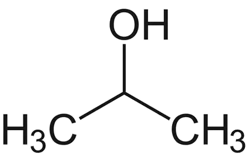
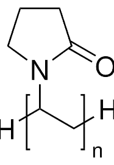
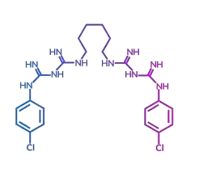

O álcool isopropílico (propan-2-ol) pertence à função álcool. Sua fórmula
molecular é C₃H₈O e sua estrutura pode ser representada como:

Função Orgânica
Álcoois são compostos que apresentam o grupo funcional hidroxila (–OH) ligado a um carbono
saturado. No isopropílico, o carbono do –OH é secundário, formando um álcool secundário.
Características Principais
Inflamável e incolor.
Evapora rapidamente.
Baixa umidade.
Evita oxidação em superfícies metálicas.
Aplicações
Limpeza de eletrônicos e lentes.
Antisséptico superficial.
Solvente industrial.
Remoção de resíduos em laboratórios.
Polivinilpirrolidona-Iodo (PVP-I)
O PVP-I é um complexo entre o polímero PVP e o iodo molecular (I₂).

Função Orgânica
O PVP é formado a partir da vinilpirrolidona, pertencente às funções amida
cíclica e polímero orgânico.
Estrutura Química
Sua fórmula estrutural é representada por (C₆H₉NO)ₙ, e quando complexado com iodo, forma (C₆H₉NO)ₙ·I.
Usos Comuns
Higienização de feridas.
Preparação pré-operatória da pele.
Antisséptico bucal.
Cuidados com mucosas.
Como Funciona?
A liberação lenta do iodo garante ação antimicrobiana contínua com menor irritação.
Precauções
Evitar em caso de alergia ao iodo.
Não usar em grandes áreas.
Não indicado para grávidas e lactantes.
Não ingerir.
Clorexidina
A clorexidina é um composto pertencente à classe das biguanidas, formado por dois grupos
biguanida ligados a anéis aromáticos. Sua fórmula molecular é C22H30Cl2N10 e sua
estrutura pode ser representada como:

Função Orgânica
A molécula apresenta grupos biguanida, contendo átomos de nitrogênio (N) e cloro (Cl) ligados a
anéis aromáticos.